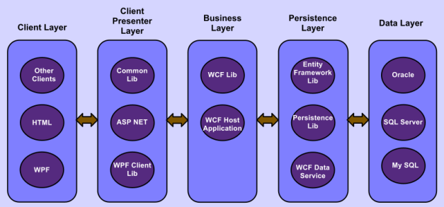

N-Tier架构实例
一个高解耦的、可单元测试的、部署灵活、实现高效和验证灵活的N-Tier .NET 架构实例
概述
N-Tier软件架构可以解决可以解决如下C/S系统问题：可扩展性，安全性，容错性等等。在之前的文章- N-Tier 体系架构和技巧（N-Tier Architecture and Tips） 中，我们介绍了基本的N-Tier体系架构概念和一些实践技巧。
在本文中，我们尽力详细阐述使用ASP.NET MVC 3、WCF和Entity Framework技术构建N-Tier架构的范例程序。在Java平台上，通常有现成的方式实现N-Tier架构,J2EE体系结构，其使用实体bean上的会话bean，用于业务和持久层，Java bean，servlet或JSP，用于客户表现层，Java Swing，HTML或applet作为客户端。因此，对于J2EE，不同的应用程序可以用非常类似的方式实现。然而，在.NET平台，尽管有大量的工具和功能存在，但是并不存在像J2EE一样预先定义的方式确保实现N-Tier架构。其结果是，有大量不一致和现存的方法去实现这一点。有些是好的，有些则不合适。
本文介绍一个高解耦的、可单元测试的、部署灵活、实现高效和验证灵活的N-Tier .NET 架构。这里，我们实现的将.NET平台上一些知名的工具和功能集中在一起，拿出一个可行的方案。因为在一篇文章有太多内容需要讨论，在我们的范例方案中，我们将主要精力集中于business和persistence层，但是仍然会简要谈及其它层。
为了更好理解本文，我们建议你首先阅读之前关于N-Tier 体系架构基本概念的文章。和前面文章提到的一样，这篇文章也是基于假设一个团队有完全控制N-Tier架构的所有层的能力。
范例概述
示例Northwind数据库是Microsoft Access等自带的。示例代码未经单元测试与生产验证，仅供学习使用。例如，生产中业务如果确定了只需要DataServiceContext,ObjectContext或DbContext其中之一，那么框架中也只需要实现其中一种持久层技术。示例代码中把DataServiceContext,ObjectContext和DbContext都实现了，是为了阐释我们可以做到，在不修改业务层的情况下，灵活地切换各种持久层技术。又如，出于安全考虑，你不想把GH.Northwind.Business部署到client presenter layer所在的web server服务器上,那么你可以从GH.Northwind.Client.Common删除所有GH.Northwind.Business相关的引用和代码。这样就能保证业务层与客户表示层被安全地分开部署到不同的机器上。生产中有时也允许业务层与客户表示层部署到同一服务器上，示例代码中采用此方案，是为了阐释框架的部署灵活性，另外示例项目中的CRUD方案比较粗简，你可以自行增加诸如多对多，多对一关系处理等高级功能。参阅Basic Handling and Tips of Database Relationships in Entity Framework
IDE:Visual Studio 2010
asp.net mvc3 with .NET framework 4.0
数据库：SQL server 2008R2，运行\GH.3Tier.Demo\instnwnd.sql以创建Northwind数据库
更新数据源：按实际参数更新NorthwindEntities database connectionString：GH.Northwind.Web,GH.Northwind.Business.Host和GH.Northwind.EntityFramework.Host
如果GH.Northwind.Web和GH.Northwind.Business.Host中的"UseWcfDataservice"被设置为true，则需要手动启动GH.Northwind.Business.Host的WCF服务和GH.Northwind.EntityFramework.Host的WCF数据服务。还有更多的架构方案可以灵活设置。我们的目标暂定为在ASP.NET MVC3里面实现Product实体的CRUD操作。
在VS 2013中GH.Northwind.Web project会出现编译错误：The type 'ModelClientValidationRule' exists in both dlls
Error 1 The type 'System.Web.Mvc.ModelClientValidationRule' exists in both 'c:\Program Files (x86)\Microsoft ASP.NET\ASP.NET MVC 3\Assemblies\System.Web.Mvc.dll' and 'c:\Program Files (x86)\Microsoft ASP.NET\ASP.NET Web Pages\v2.0\Assemblies\System.Web.WebPages.dll' ...
分析：if you're working in MVC, System.Web.WebPages is the redundant one. Or if you happen to be using something within the System.Web.WebPages assembly like TagBuilder for example, then change the reference to v1 instead of v2, since it is v2 that includes the conflicting ModelClientValidationRule class.
解决方法是删除掉项目中的System.Web.WebPages引用。
多层架构模型概述
下图是.NET中的N-Tier多层架构模型。每层中的椭圆形部分可以共存或单独存在。
图 1. .NET中的N-Tier多层架构模型 客户层：直接连接最终用户的客户端。可能有几种不同类型的客户端共存，例如WPF，Windows Form，HTML网页等。
客户表现层：包含客户端所需的表示逻辑，如在IIS Web服务器的ASP .NET MVC。 它也是不同的客户端到业务层的适配器。 在此层中有三个组件：common lib，ASP .NET，WPF Client lib。 common lib包含所有类型客户端的可重用的通用代码。ASP .NET库和WPF客户端库分别是Web客户端和WPF客户端的库。如果添加了一种新类型的客户端，我们可能需要添加额外的lib来支持新类型客户端，例如Windows Form客户端。
业务层：所有业务领域和逻辑的封装与处理;也称为领域层。在这个层有两个组件：WCF lib和WCF Host Application;所有的业务逻辑和实现都在WCF lib中;WCF Host Application只处理WCF部署。在2层架构配置中，客户表现层将直接调用WCF lib; 而在完整的N层架构配置中，客户表现层将直接调用WCF Host Application。业务层中的接口通常是面向业务的外观层，其仅将客户端所需要的业务操作暴露给客户端。因此，它还作为客户端的代理层来保护业务域和逻辑。客户端通常将业务层视为黑盒：向业务层发送请求，然后请求完成并获得响应;期间并不知道请求是如何满足的。
持久层：处理业务数据对数据层的读/写，也被称为数据访问层（DAL）。这个层中有三个组件：Entity Framework lib，persistence lib和可选的WCF data service。persistence lib是一个通用库，用于简化Entity Framework或其他持久化技术在业务层中的使用;它还将业务层与Entity Framework解耦。业务层将直接调用persistence lib而不是Entity Framework。根据应用程序配置，persistence lib将直接调用Entity Framework lib或直接调用在Entity Framework lib之上创建的WCF data service。如果数据库作为数据中心用于各种不同类型的应用，直调WCF data service将是一个不错的选择; 否则，跳过WCF data service可提高性能。
数据层：外部数据源，如数据库服务器，CRM系统，ERP系统，大型机或其他传统系统等。数据层被用来存储应用程序数据。数据库服务器是当今最流行的。范例中列出了三个现代数据库供选择。
N-Tier应用的特点亮点
我们在示例应用程序中做了以下主要的事情：
层与层之间只依赖于接口，而不是依赖于高耦合的具体类。
不同的层架构可以轻松切换，方法是通过简单地更新两个在配置文件中的参数的bool值：参数“UseWcfDataService”和“N-Tier”。 我们将WCF实现从WCF Host分离到不同的项目中，并通过客户端的非代理方式访问WCF服务来实现这一点。
为了在整个应用程序中使用它们，我们在一个轻量级库项目GH.Northwind.Business.Entities中使用T4模板自动生成并维护一个版本的实体类，而不是原始的Entity Framework项目，以便我们可以随时随处用这个轻量级库重新生成和重用该实体类，而不需要使用杂乱与重量级的Entity Framework。
业务层不直接调用Entity Framework，而是通过Persistance lib。 这样做可以帮助我们实现业务层和持久层之间的最大解耦，并允许我们轻松地切换持久性技术，而不会对业务层产生任何副作用。 此外，它方便和简化了Entity Framework在业务层中的使用。 该示例应用程序演示，我们可以交换WCF Data Service及的DbContext（或：ObjectContext的）之间的持久化技术，只需更新配置文件中UseWcfDataService参数的值。
对于我们的示例应用程序中的数据验证，我们使用自动生成的元数据类来进行单个属性的简单验证，并使用接口IValidatableObject来进行多个属性的类级验证。 目前，我们将所有验证逻辑放在一个地方：项目GH.Northwind.Business.Entities，以便我们只需要实现和维护一个版本的验证逻辑(如果出于安全原因，也可以将所有验证逻辑移动到各个项目自己的库中)。所有层共享此版本的验证逻辑。根据我们的实际需要，我们可以在许多层面轻松地调用这些验证。目前，我们在html网页客户端层和ASP .NET MVC3客户端呈现器层中调用这些验证。
对于此WCF业务服务层中的错误处理，我们实现IErrorHandler行为以捕获所有异常并将其转换为FaultException，以便服务通道不会出错而中断，并可在发生异常后再次使用。此外，FaultException可以发送到客户端以帮助调试。
尝试尽可能自动生成代码：所有带wcf标签的实体类和带注释标签的元数据类都由代码生成器自动生成。 我们甚至可以通过域服务类向导(domain service class wizard)自动生成业务接口的草稿版本。
我们在客户端使用非代理方式访问WCF服务和WCF数据服务。 这样做可以允许我们使用共享公共库中的数据契约（主要是自动生成的实体类）和服务接口，这些接口也由WCF服务使用。 因此，我们避免了由代理方式的服务引用造成的服务接口和数据契约（可以使用公共库中的共享数据契约来避免重复）的重复代码; 也避免了WCF服务端更新一次就需要更新服务引用一次。
Visual Studio 2010中的实例项目
目录结构及其与架构层的匹配：
图 2. Visual Studio解决方案资源管理器中的示例应用程序的文件夹结构 Visual Studio解决方案资源管理器中的示例应用程序的文件夹结构。
我们的上述文件夹结构与图1中的图层匹配的方式如下：
客户层：在用户的计算机上的Web浏览器中显示的HTML页面; 这些html页面由来自web服务器的客户端呈现器层项目GH.Northwind/Clients/GH.Northwind.Web生成。实例中暂时只使用这种客户端。
客户表现层：在子文件夹GH.Northwind/Clients的所有2个项目。
业务层：在子文件夹GH.Northwind/Business的所有4个项目。
持久层：在子文件夹GH.Northwind/Persistence的所有3个项目。
数据层：MS SQL server 2008 R
文件夹和项目概要
项目GH.Common：包含可以在任何应用程序，而不仅仅是本实例Northwind中重复使用的所有常用组件; 它包含子文件夹：LogService，ServiceLocator，Framework等
LogService包括一个具有默认实现的日志接口; 您可以轻松插入任何类型的日志提供程序，如log4Net，NLog，企业库日志，.NET内置的Trace/Debug日志等。
ServiceLocator包括一个由ninject包实现的简单服务定位器。
Framework包括与任何应用程序的体系结构相关的顶级类。
子文件夹GH.Northwind：包括Northwind应用程序的所有相关项目。如果有一个新的"班级注册"应用程序，我们可以添加一个新文件夹GH.ClassRegistration作为GH.Northwind的对等文件夹，以保存与"班级注册"应用程序相关的所有项目。
在文件夹GH.Northwind下，我们有三个子文件夹：
子文件夹Business： 包括4个与业务层相关的项目：
GH.Northwind.Business.Entities：一个库项目，其中包含所有业务的POCO实体，用于整个Northwind应用程序; 业业验证目前也放在此文件夹中。
GH.Northwind.Business.Interfaces：一个库项目，保存客户端层使用的所有业务操作接口。
GH.Northwind.Business：一个核心的WCF业务服务库项目，它实现了项目GH.Northwind.Business.Interfaces中定义的所有业务操作和逻辑。
GH.Northwind.Business.Host：WCF服务寄宿应用程序项目，主要服务于项目GH.Northwind.Business。 目前它被配置为Web服务部署。
子文件夹Clients：包括与客户端表现层和客户端层相关的所有项目。
项目GH.Northwind.Client.Common保存所有类型的客户端的所有公用组件;
项目GH.Northwind.Client.Web是Web客户端的客户端表现层。客户端层可以具有所有类型的客户端，例如ASP，WPF或Windows窗体。
注：这里我们只使用一种类型的客户端作为演示：ASP .NET MVC3 Web客户端。
子文件夹Persistence：包括3个持久层相关的项目：
GH.Northwind.EntityFramework：一个保存实体框架的lib项目。
GH.Northwind.EntityFramework.Host：使用项目GH.Northwind.EntityFramework中的Entity Framework的WCF数据服务项目。
GH.Northwind.Persistence：一个正常的类lib作为业务层和实体框架之间的桥梁。
子文件夹Subfolder Tests:放置所有的测试代码，包括所有单元测试和功能测试。代码应该测试，测试应该自动化。测试代码放在一起可方便管控，且更易实现测试自动化。生产代码也和测试代码分开，更为优雅干净。
几组主要模块与项目的详细阐述
GH.Common项目中的Framework文件夹
包括驱动所有层的通用顶级框架类，这些类可被广泛通用于其它项目，并不限于GH.Northwind。这样我们就有了一个瘦框架和多个富应用程序。Framework有三个子文件夹：
子文件夹 Persistence
是业务层与实体框架层的抽象适配器层。IPersistence是一个只包含基本数据库CRUD操作的顶级通用接口，仅用于演示，不包含一些高级的多对多，多对一关系的高级操作。IPersistence解耦了业务层与真实的持久性技术(如实体框架 Entity Framework); 也优化与简化了业务层中持久性技术的使用。接口如下：
图 3. IPersistence接口 public interfaceIPersistence<T> { void Insert(T entity, boolcommit); void Update(T entity, boolcommit); void Delete(T entity, boolcommit); void Commit(); IQueryable<T> SearchBy(Expression<Func<T, bool>> predicate); IQueryable<T> GetAll(); }PersistSvr是IPersitence接口的一个静态的用户友好的使用方法。
PersistSvr通过服务定位器来获得它的PersistenceProvider，如果要使用新的持久性提供者，只需要在服务定位器上注册一下新提供者即可。GH.Common.Framework.Persistence下有的子文件夹：:
DataServiceContext：WCF data service,
ObjectContext：默认的Entity Framework
DbContext：Entity Framework Code first
以上三个文件夹结构很相似，其中PersistenceBase.cs实现IPersistence接口。实现方式不一。目的是为了减少在GH.Northwind.Persistence中的子类的额外代码量。DbCxt(DbContext)中的PersistenceBase.cs如下:
图 4. DbCxt(DbContext)中的PersistenceBase.cs public class PersistenceBase<T> : IPersistence<T> whereT : BusinessEntityBase {protected String _entitySetName = String.Empty;public ILogger<PersistenceBase<T>> Logger { getset; }public staticILogger<PersistenceBase<T>> Log {get { returnLog<PersistenceBase<T>>.LogProvider; } }public staticDbContext DataContext {get { returnDataCxt.Cxt; } }#region IPersistence<T> Memberspublic virtual void Insert(T entity, boolcommit) { InsertObject(entity, commit); }public virtual void Update(T entity, boolcommit) { UpdateObject(entity, commit); }public virtual void Delete(T entity, boolcommit) { DeleteObject(entity, commit); }public virtual voidCommit() { SaveChanges(); }public Expression<Func<T, bool>> predicate { getset; }public virtualIQueryable<T> SearchBy(Expression<Func<T, bool>> predicate) {returnEntitySet.Where(predicate); }public virtualIQueryable<T> GetAll() {returnEntitySet; }#endregionprotected virtualT FindMatchedOne(T toBeMatched) {throw new ApplicationException("PersistenceBase.EntitySet: Shouldn't get here."); }protected virtualIQueryable<T> EntitySet {get { throw new ApplicationException("PersistenceBase.EntitySet: Shouldn't get here."); } }protected virtual StringEntitySetName {get { throw new ApplicationException("PersistenceBase.EntitySetName: Shouldn't get here."); } }protected void InsertObject(T entity, boolcommit) { DataContext.Entry(entity).State = EntityState.Added;try{if(commit) SaveChanges(); }catch(Exception e) { Log.Error(e);throw; } }protected void UpdateObject(T entity, boolcommit) {try{ DbEntityEntry entry = DataContext.Entry(entity); DataContext.Entry(entity).State = EntityState.Modified;if(commit) SaveChanges(); }catch(InvalidOperationException e)// Usually the error getting here will have a message:// "an object with the same key already exists in the// ObjectStateManager. The ObjectStateManager cannot track multiple objects with the same key"{ T t = FindMatchedOne(entity);if(t==null) throw new ApplicationException("Entity doesn't exist in the repository");try { DataContext.Entry(t).State = EntityState.Detached; (EntitySet asDbSet<T>).Attach(entity); DataContext.Entry(entity).State = EntityState.Modified;if (commit) SaveChanges(); } catch(Exception exx) {//Roll backDataContext.Entry(entity).State = EntityState.Detached; (EntitySetasDbSet<T>).Attach(t); Log.Error(exx);throw; } }catch(Exception ex) { Log.Error(ex);throw; } }protected void DeleteObject(T entity, bool commit) { T t = FindMatchedOne(entity); (EntitySet asDbSet<T>).Remove(t);try{if(commit) SaveChanges(); }catch(Exception e) { Log.Error(e);throw; } }protected voidSaveChanges() {try{ DataContext.SaveChanges(); }catch(DbUpdateConcurrencyException ex) {// Update original values from the database (Similar ClientWins in ObjectContext.Refresh)var entry = ex.Entries.Single(); entry.OriginalValues.SetValues(entry.GetDatabaseValues()); DataContext.SaveChanges(); } } // End of function}注：注意，UpdateObject函数会捕捉InvalidOperationException异常，异常起因是EntityFramework的ObjectStateManager未追踪到传入的参数entity，然后我们卸载已追踪到的入参entity，装载未追踪到的那个入参entiry。
SaveChange函数会捕捉(乐观锁)并发异常，处理方法是从数据库加载新值。
ObjectContext和WCF data service中的PersistenceBase.cs的异常处理也是类似的
子文件夹 Business：
保存业务层的超类。其中一个抽象类BusinessEntityBase是作为所有业务实体服务的超类。 它实现了三个接口： IValidatableObject ， IDataErrorInfo ， INotifyPropertyChanged 。 IValidatableObject是类级业务验证。 IDataErrorInfo和INotifyPropertyChanged用于WPF的用户输入数据验证，和MVVM模式下ViewModel与View数据绑定，请参阅Microsoft MSDN文章实现MVVM模式的详细信息。目前实例中暂时只使用一个ASP .NET客户端，所以已经注释掉了接口IDataErrorInfo和INotifyPropertyChanged。
子文件夹 Client：包括所有客户端的顶级类，暂时放了客户端命令行相关的类。暂无在实例中使用。
GH.Northwind.Persistence 项目（\GH.Northwind\Persistence)
是Northwind业务层与Northwind Entity framework之间的具体实现类，包括三种不同情景下的northwind 应用的持久化的子类：WCF Data service, ObjectContext 和 DbContext. 该子类从GH.Common.Framework.Persistence\PersistenceBase继承而来，非常简单，所以把所有业务相关类都放在一个文件中。参见DbCxt目录下的NorthwindPrst.cs:
图 5. DbCxt目录下的NorthwindPrst.cs amespaceGH.Northwind.Persistence.DbCxt {public classCustomerPrst : PersistenceBase<Customer> {protected overrideIQueryable<Customer> EntitySet {get { return (DataContext asNorthwindEntities).Customers; } }protected override StringEntitySetName {get { return_entitySetName ?? (_entitySetName = Util.GetMemberNameExtra((NorthwindEntities g) => g.Customers)); } }protected overrideCustomer FindMatchedOne(Customer toBeMatched) {return EntitySet.DefaultIfEmpty(null).First(o => o.CustomerID == toBeMatched.CustomerID); } }public classProductPrst : PersistenceBase<Product> {protected overrideIQueryable<Product> EntitySet {get { predicate = p => p.ProductID == 1return (DataContext asNorthwindEntities).Products; } }protected override StringEntitySetName {get { return_entitySetName ?? (_entitySetName = Util.GetMemberNameExtra((NorthwindEntities g) => g.Products)); } }protected overrideProduct FindMatchedOne(Product toBeMatched) {return EntitySet.DefaultIfEmpty(null).First(o => o.ProductID == toBeMatched.ProductID); } }public classOrderPrst : PersistenceBase<Order> {protected overrideIQueryable<Order> EntitySet {get { return (DataContext asNorthwindEntities).Orders; } }protected override StringEntitySetName {get { return_entitySetName ?? (_entitySetName = Util.GetMemberNameExtra((NorthwindEntities g) => g.Orders)); } }protected overrideOrder FindMatchedOne(Order toBeMatched) {return EntitySet.DefaultIfEmpty(null).First(o => o.OrderID == toBeMatched.OrderID); } }public classOrder_DetailPrst : PersistenceBase<Order_Detail> {protected overrideIQueryable<Order_Detail> EntitySet {get { return (DataContext asNorthwindEntities).Order_Details; } }protected override StringEntitySetName {get{return_entitySetName ?? (_entitySetName = Util.GetMemberNameExtra((NorthwindEntities g) => g.Order_Details)); } }protected overrideOrder_Detail FindMatchedOne(Order_Detail toBeMatched) {return EntitySet.DefaultIfEmpty(null).First(o => o.OrderID == toBeMatched.OrderID && o.ProductID == toBeMatched.ProductID); } }public classSupplierPrst : PersistenceBase<Supplier> {protected overrideIQueryable<Supplier> EntitySet {get { return (DataContext asNorthwindEntities).Suppliers; } }protected override StringEntitySetName {get{return_entitySetName ?? (_entitySetName = Util.GetMemberNameExtra((NorthwindEntities g) => g.Suppliers)); } }protected overrideSupplier FindMatchedOne(Supplier toBeMatched) {return EntitySet.DefaultIfEmpty(null).First(o => o.SupplierID == toBeMatched.SupplierID); } }public classCategoryPrst : PersistenceBase<Category> {protected overrideIQueryable<Category> EntitySet {get { return (DataContext asNorthwindEntities).Categories; } }protected override StringEntitySetName {get{return_entitySetName ?? (_entitySetName = Util.GetMemberNameExtra((NorthwindEntities g) => g.Categories)); } }protected overrideCategory FindMatchedOne(Category toBeMatched) {return EntitySet.DefaultIfEmpty(null).First(o => o.CategoryID == toBeMatched.CategoryID); } } }你可以看到我们只需要从超类重载两个属性和一个函数：属性EntitySet，EntitySetName和函数FindMatchedOne。 对于EntitySetName，我们尽量不要使用硬编码的名称，而是通过Lambda表达式解决它。首先，硬代码容易出错。此外，要直到运行时才能检测到硬编码的错误。使用强类型Lamda表达式解决方案，可以在编译期间检测到由于更改或拼写错误造成的错误。FindMatchedOne函数是找到与入参toBeMatched相同的标识匹配的记录; 该标识可以是复合主键，例如表Order_Detail中的OrderId和ProductId。
对于DataServiceContext，我们尝试使用非代理方式访问数据服务。 在命名空间HelpOnly下的服务引用代理仅用于通过Lamda函数获取EntitySetName的模拟。 如果你不喜欢这个模拟，你可以删除它，然后硬编码EntitySetName，但存在之前提到的缺点。
GH.Northwind.EntityFramework 项目(\GH.Northwind\Persistence:)
这是一个WCF的lib项目，包括Northwind的实体框架。 可以从这里查阅到：如何通过实体数据模型向导(Entity Data Model Wizard)添加的实体框架模型(model)。 我们只选择6个表以简化示例：Products产品, Customers客户, Orders订单, Order_Details, Categories类别 和 Supplier供应商。基本步骤是，先创建一个空的WCF lib项目，然后使用上面提到的向导添加ADO .NET实体类。实体框架向导中的创建默认实体类有点重。所以我们可以通过DbContext生成器用进一步将它们转换为轻量级的带WCF支持的DbContext POCO实体类。最后，我们需要将这些实体类的T4模板复制并粘贴到项目GH.Northwind.Business.Entities中，以用于整个应用程序。以下是详细的步骤：
- 在项目GH.Northwind.EntityFramework中单击并打开文件GHNorthwindModels.edmx，然后可以看到一些表图。 右键单击图区域，然后单击添加代码生成项，然后单击在线模板，然后选择"ADO.NET C# DbContext Generator With WCF Support"，单击“添加”，然后“确定”，两个文件Model1.Context.tt和Model1.tt。 将其重命名为NorthwindModels.Context.tt和NorthwindModels.tt，单击NorthwindModels.tt，可以看到所有模型。 复制NorthwindModels.tt并将其粘贴到项目GH.Northwind.Business.Entities中。
在项目GH.Northwind.Business.Entities中的文件NorthwindModels.tt中更改下面的行：
string inputFile = @"GHNorthwindModels.edmx"改为：
string inputFile = @"..\..\Persistence\\GH.Northwind.EntityFramework\\GHNorthwindModels.edmx"现在粘贴的NorthwindModels.tt指向实体框架文件的正确路径。
在项目GH.Northwind.Business.Entities中，右键单击NorthwindModels.tt，单击“运行自定义工具”，现在点击文件NorthwindModels.tt，可以看到几个实体文件都生成。 它们的命名空间不同于在项目GH.Northwind.EntityFramework中生成的实体的命名空间。从现在起，我们将在整个应用程序中引用项目GH.Northwind.Business.Entities中的实体，甚至在项目GH.Northwind.EntityFramework中引用。
在项目GH.Northwind.EntityFramework中，将一行“using GH.Northwind.Business.Entities;”添加到文件NorthwindModels.Context.cs中，然后Entity Framework引用来自项目GH.Northwind.Business.Entities的实体，以保持使用一个版本将避免在许多其他地方的实体冲突。每次重新运行代码生成器工具后，添加的那行“using GH.Northwind.Business.Entities”将被删除。需要再次手动添加。(也可直接一次性地修改模板NorthwindModels.Context.tt file in order to include the reference there (at the same spot the other references are included))
删除项目GH.Northwind.EntityFramework中的已经不再需要的原始文件NorthwindModels.tt。
注：以上步骤针对的是DbContext，如果是针对ObjectContext其步骤是相同的，只要注意要使用"ADO.NET POCO Entity Generator With WCF Support"类型的代码生成器。GH.Northwind.EntityFramework.Host项目(\GH.Northwind\Persistence)
这是一个架构于实体框架之上，于GH.Northwind.EntityFramework之下的的WCF数据服务项目。 阅读这里了解如何在实体框架添加WCF数据服务。
将项目GH.Northwind.EntityFramework添加到此项目引用中。另外，将下面的连接字符串从GH.Northwind.EntityFramework配置文件复制到GH.Northwind.EntityFramework.Host配置文件：
图 6. GH.Northwind.EntityFramework.Host配置文件 <connectionStrings<add name="NorthwindEntities"connectionString="metadata=res://*/GHNorthwindModels.csdl|res://*/GHNorthwindModels.ssdl| res://*/GHNorthwindModels.msl;provider=System.Data.SqlClient;provider connection string="data source=WHU-DT\SQLEXPRESS10;initial catalog=Northwind;integrated security=True;multipleactiveresultsets=True; App=EntityFramework"" providerName="System.Data.EntityClient" / </connectionStringsWCF data service在ObjectContext实体框架之上运行是比较顺畅的，但如果实体框架换成DbContext，WCF data service却不能直接运行，需要做些小改动。以下为改动过的NorthwindDataService.svc，参阅此处:
图 7. 改动过的NorthwindDataService.svc [ServiceBehavior(IncludeExceptionDetailInFaults = true)] public classNorthwindDataService : DataService<ObjectContext> {// This method is called only once to initialize service-wide policies.public static voidInitializeService(DataServiceConfiguration config) {// Allow full access rights on all entity setsconfig.SetEntitySetAccessRule("*", EntitySetRights.All); config.SetServiceOperationAccessRule("*", ServiceOperationRights.All); config.DataServiceBehavior.MaxProtocolVersion = DataServiceProtocolVersion.V2;// return more information in the error response message for troubleshootingconfig.UseVerboseErrors =true; }protected overrideObjectContext CreateDataSource() {var ctx = newNorthwindEntities(); var oContext = ctx.ObjectContext; oContext.ContextOptions.ProxyCreationEnabled = false return oContext; } }上述改动的关键在于使用DbContext.ObjectContext，是因为DbContext是建立于ObjectContext之上的。同样的，DbContext.ObjectContext.ContextOptions.ProxyCreationEnabled设置关闭，是因为DbContext的实体类是POCO; 为使WCF data service正常工作，POCO需要关闭代理的创建。
GH.Northwind.Business.Entities, GH.Northwind.Business.Interfaces 和 GH.Northwind.Business项目
我们把实体和接口分离到各自独立的项目，这样他们就可以不需要具体实现业务而就可单独发布。如上所述，项目GH.Northwind.Business.Entities中的实体类是由具有wcf支持的DbContext生成器自动生成的; 实体元数据也由代码生成器自动生成。 GH.Northwind.Business.Interfaces中的接口是以业务为中心，而不是以数据为中心。 但是，如果这些CRUD操作是面向业务的，那么这里的接口可以包括一些业务实体的一些CRUD操作。除了一些CRUD操作，业务接口需要包括客户端所需的所有业务操作。 对于Products产品, Customers客户, Orders订单, Order_Details订单明细, Categories类别和Supplier供应商，我们可以确定他们的CRUD操作是必需的，且订单和Order_Details订单明细的CRUD操作将需要结合在一起。
为实体创建CRUD接口是比较麻烦的，特别是如果实体的数量很大。所以我们将利用.NET中的域服务类(Domain Service class)功能而非其他第三方代码生成器来生成代码。 首先在GH.Northwind.EntityFramework中基于现有的Entity Framework模型创建一个域服务类。(确保在添加域服务类之前已经编译了项目GH.Northwind.EntityFramework; 否则无法在域服务类向导中看到模型类。如果看到的是空类，则可删除旧EDMX和APP.config中的connection string，然后再生成新EDMX并"运行自定义工具"以生成“基类为ObjectContext”的实体代码，并编译项目后，即可看到模型类出现。以后需要再把EDMX和APP.config中的connection string再删掉重新创建，或在其中运行添加代码生成项) 参阅这里了解如何创建一个域服务类向导。向导完成后，将生成一个文件：DomainService1.cs。 接下来，我们需要在Visaul Studio中通过自动方式从这个文件中提取有用的信息。 a）打开文件DomainService1.cs，将鼠标焦点放在类名DomainService1上，然后右键单击，选择refactor-> Extract Interface，然后选中“放入另一个文件”，然后选择要提取的函数。在这里，我们为表Products产品, Customers客户, Orders订单, Categories类别和Supplier供应商选择CRUD操作，但不选择Order_Details订单明细表。 现在我们有一个接口文件：IDomainService1.cs。 重命名此接口INorthwindSvr ，并添加[ServiceContract]和[OperationContract] ，更新其命名空间并移动到项目GH.Northwind.Business.Interfaces，将由客户层和业务层使用。
最后要从项目GH.Northwind.EntityFramework中删除文件DomainService1.cs、DomainService1.metadata和IDomainService1.cs。 然后，我们需要在项目GH.Northwind.Business.Interfaces中根据IPersistence.cs接口，进一步修改和扩展接口INorthwindSvr,(如把System.Linq.IQueryable<XX>改为List<XX>)，以满足此范例的业务需要; 其更新版本如下：
图 8. INorthwindSvr新版本 [ServiceContract]public interfaceINorthwindSvr { [OperationContract] List<Customer> GetCustomers(); [OperationContract]void InsertCustomer(Customer customer, boolcommit); [OperationContract]void UpdateCustomer(Customer currentCustomer, boolcommit); [OperationContract]void DeleteCustomer(String customerId, bool commit); [OperationContract] List<Order> GetOrders(); [OperationContract] List<Order_Detail> GetOrderDetailForAnOrder(int orderId); [OperationContract] List<Order> GetOrderForACustomer(StringcustomerId); [OperationContract]voidCreateOrder(Order order, Order_Detail[] details); [OperationContract]void UpdateOrder(Order currentOrder, Order_Detail[] details, boolcommit); [OperationContract]void DeleteOrder(int orderId, boolcommit); [OperationContract]void DeleteAnOrderDetailFromAnOrder(int orderId, int orderDetailId, bool commit); [OperationContract] List<Product> GetProducts(); [OperationContract] Product GetProductById(intid); [OperationContract]void InsertProduct(Product product, boolcommit); [OperationContract]void UpdateProduct(Product currentProduct, boolcommit); [OperationContract]void DeleteProduct(int productId, boolcommit); [OperationContract] List<Category> GetProductCategories(); [OperationContract] List<Supplier> GetSuppliers(); [OperationContract]void Commit(); }因为在库项目GH.Northwind.Persistence已经实现，所以在项目GH.Northwind.Business中，实现类NorthwindSvr就很简短。此外，还有一种基于接口创建函数存根的快速方法：在Visual Studio 2010编辑器中打开文件NorthwindSvr.cs，在文件NorthwindSvr.cs中右键单击INorthwindSvr，然后单击实现interface->实现接口，接口函数存根是在文件NorthwindSvr.cs中自动创建的。 在GH.Common.Framework中的静态类PersistSvr的帮助下，我们可以快速实现这些函数存根。
我们需要初始化NorthwindSvr的持久性提供程序。 我们将初始化放入类NorthwindSvr的静态构造函数中，以便它可以在业务类NorthwindSvr被访问的第一时间就被调用。 我们还使用配置参数“UseWcfDataService”来指定是否使用WCF数据服务。 如果没有，那么ObjectContext或DbContext将被直接使用。下面是初始化代码：
图 9. NorthwindSvr初始化代码 staticNorthwindSvr() {string useWcfDataService = System.Configuration.ConfigurationManager.AppSettings["UseWcfDataService"];if (useWcfDataService.ToLower() == "true") {string dataServiceUrl = ConfigurationSettings.AppSettings["WcfDataServiceUrl"]; DataServiceCxtFrameWkNamespace.DataCxt.Cxt = new DataServiceContext(newUri(dataServiceUrl)); ServiceLocator<IPersistence<Customer>>.RegisterService<DataServiceCxtNamespace.CustomerPrst>(); ServiceLocator<IPersistence<Product>>.RegisterService<DataServiceCxtNamespace.ProductPrst>(); ServiceLocator<IPersistence<Order>>.RegisterService<DataServiceCxtNamespace.OrderPrst>(); ServiceLocator<IPersistence<Order_Detail>>.RegisterService<DataServiceCxtNamespace.Order_DetailPrst>(); }else{if (typeof(NorthwindEntities).IsSubclassOf(typeof(ObjectContext))) {// Below are commented out since now NorthwindEntities is DbContext;// Uncomment them out if NorthwindEntities is ObjectContext; /*ObjectCxtFrameWkNamespace.DataCxt.Cxt = new NorthwindEntities(); ServiceLocator<IPersistence<Customer>>.RegisterService<ObjectCxtNamespace.CustomerPrst>(); ServiceLocator<IPersistence<Product>>.RegisterService<ObjectCxtNamespace.ProductPrst>(); ServiceLocator<IPersistence<Order>>.RegisterService<ObjectCxtNamespace.OrderPrst>(); ServiceLocator<IPersistence<Order_Detail>>.RegisterService<ObjectCxtNamespace.Order_DetailPrst>();*/}else if (typeof(NorthwindEntities).IsSubclassOf(typeof(DbContext))) { DbCxtFrameWkNamespace.DataCxt.Cxt = newNorthwindEntities(); ServiceLocator<IPersistence<Customer>>.RegisterService<DbCxtNamespace.CustomerPrst>(); ServiceLocator<IPersistence<Product>>.RegisterService<DbCxtNamespace.ProductPrst>(); ServiceLocator<IPersistence<Order>>.RegisterService<DbCxtNamespace.OrderPrst>(); ServiceLocator<IPersistence<Order_Detail>>.RegisterService<DbCxtNamespace.Order_DetailPrst>(); }else{throw new NotSupportedException("NorthwindSvr: static Constructor: "+typeof(NorthwindEntities).ToString() + " isn't a supported type."); } } }元数据类和接口IValidatableObject是在ASP.NET MVC和WPF的客户表现层中做数据验证的好方法。有很多方法和代码生成器来自动生成这些元数据文件。我们在这里使用代码生成器来自动生成它们。命名空间在其后更新;标记MaxLength要替换为StringLength，因为MaxLength不在.NET 4的System.ComponentModel.Annotation中。此外，对于每个partial实体类，我们在项目GH.Common的框架中手动添加超类BusinessEntityBase。然后我们将所有元数据文件复制到项目GH.Northwind.Business.Entities中的子文件夹MetaAndPartial中。超类BusinessEntityBase实现接口IValidatableObject。通常，对于单个属性验证，注释标签(annotation tag)可以轻松地处理。如果有跨越多个实体的属性验证，那么我们可以在实体子类中重载这个接口。在ASP .NET MVC3和Entity Framework code first DbContext中，元数据类验证标签和IValidatableObject接口可以配置为在运行时自动触发验证。下面是示例类CustomerMeta：在此文件中，我们重载接口IValidableObject的函数验证与地址和电话两个结合的属性验证。
图 10. 示例类CustomerMeta [MetadataType(typeof(CustomerMetadata))] public partial classCustomer : BusinessEntityBase {override publicIEnumerable<ValidationResult> Validate(ValidationContext validationContext) {if (Address == String.Empty && Phone == String.Empty) {yield return new ValidationResult("Address and phone cannot be empty in the same time.",new[] { "Address", "Phone"}); }else{yield break; } } } public partial class CustomerMetadata { [DisplayName("Customer")] [Required] [StringLength(5)]public string CustomerID { getset; } [DisplayName("Company Name")] [Required] [StringLength(40)]public string CompanyName { getset; } [DisplayName("Contact Name")] [StringLength(30)]public string ContactName { getset; } [DisplayName("Contact Title")] [StringLength(30)]public string ContactTitle { getset; } [DisplayName("Address")] [StringLength(60)]public string Address { getset; } [DisplayName("Phone")] [StringLength(24)]public string Phone { getset; }//More are omitted here}对于此WCF业务服务层中的错误处理，我们在项目GH.Northwind.Business中实现IErrorHandler行为以捕获所有异常并将其转换为FaultException，以便服务通道不会因为出错中断，并可在异常发生后再次使用。此外，FaultException可以发送到客户端以帮助调试。
GH.Northwind.Business.Host项目
这是一个只做了些部署配置的wcf服务应用程序; 所有的业务操作写在GH.Northwind.Business项目中。此WCF服务中我们使用BasicHttpBinding主机部署方式。我们可以改变主机部署方式为Windows服务。甚至我们可以创建一个新的windows服务主机来作为WCf项目的宿主去访问GH.Northwind.Business。 此外，我们可以将Windows服务部署支持添加到现有主机项目中，以支持双向主机部署。
GH.Northwind.Client.Common项目(\GH.Northwind\Clients)
是客户端表现层的一部分，包括不同客户端所需的所有公共组件。我们应该将所有客户端的所有公共代码都放到此库中，以尽可能实现代码可重用性。因为我们暂时专注于业务和持久层，所以未存放更多代码。参数“N-Tier”用于指定客户端是否将使用三层或两层。如果N-Tier为true，则客户端将调用由项目GH.Northwind.Business.Host处理的business wcf service;否则，它将直接调用GH.Northwind.Business。
实现客户端表现层的更好方法是使用命令模式为所有类型的客户端获得更好的封装和灵活性。但为了简便，实例中只使用类NorthwindHandler将业务接口INorthwindSvr公开给客户端。我们使用非代理方式访问wcf业务服务。下面是类NorthwindHandler的简单内容：
图 11. 类NorthwindHandler的简单内容 public staticINorthwindSvr GetNorthwindService() {if (ConfigurationSettings.AppSettings["N-Tier"].ToLower() == "true") {string northwindBusinessUrl = ConfigurationSettings.AppSettings["NorthwindSvrBusinessUrl"]; BasicHttpBinding binding = new BasicHttpBinding(); binding.MaxReceivedMessageSize = 1000000; binding.ReaderQuotas.MaxDepth = 200; ChannelFactory<INorthwindSvr> channelFactory = newChannelFactory<INorthwindSvr>( binding,new EndpointAddress(newUri(northwindBusinessUrl))); INorthwindSvr northwindSvr = channelFactory.CreateChannel();returnnorthwindSvr; }else{return new NorthwindSvr(); } }GH.Northwind.Web项目(\GH.Northwind\Clients)
是一个用于演示目的的ASP .NET MVC3应用程序客户端。此项目属于客户端表现层，将生成作为Web客户端的html网页。目前，我们只在这个ASP.NET MVC3客户端中实现实体产品的CRUD操作。Global.asax中Start函数如下：
图 12. Global.asax中的Start函数 protected void Application_Start() { AreaRegistration.RegisterAllAreas(); RegisterGlobalFilters(GlobalFilters.Filters); RegisterRoutes(RouteTable.Routes); NorthwindController.NorthwindSvr = NorthwindHandler.GetNorthwindService(); System.Web.Mvc.ModelBinders.Binders.Add(typeof(CustomerWithOrderModel), new CustomerWithOrderBinder()); System.Web.Mvc.ModelBinders.Binders.Add(typeof(AllProductsModel), new AllProductsBinder()); System.Web.Mvc.ModelBinders.Binders.Add(typeof(SuppliersCategoriesModel), new SuppliersCategoriesBinder()); }在代码中，我们向Northwind控制器类注入了一个INorthwindSvr实例。 如果我们想要单元测试客户端，我们可以注入一个INorthwindSvr的测试实现。我们还添加了三个自定义的模型绑定器CustomerWithOrderBinder，AllProductsBinder和SuppliersCategoriesBinder来从HTTP会话轻松地存储和检索他们匹配的模型的实例。 下面是NorthwindController控制器类：
图 13. 控制器类NorthwindController public classNorthwindController : Controller {private readonlyILogger<NorthwindController> Log = Log<NorthwindController>.LogProvider;private staticINorthwindSvr _northwindSvr;public staticINorthwindSvr NorthwindSvr {get{if (_northwindSvr == null)throw new ApplicationException("NorthwindController.NorthwindSvr: NorthwindSvr is null.");return_northwindSvr; }set { _northwindSvr = value; } }publicActionResult Index() {returnView(); }publicActionResult AllProducts(AllProductsModel allProductsModel) {try{ allProductsModel.Products = NorthwindSvr.GetProducts();returnView(allProductsModel.Products); }catch (FaultException<BusinessServiceException> e) { Log.Error("Web.NorthwindController.AllProducts(...) Error from Business service layer: "+ e.Message);throw; }catch (FaultException ex) { Log.Error("Web.NorthwindController.AllProducts(...) Error from Business service layer: "+ ex.Message);throw; }catch (Exception exx) { Log.Fatal("Web.NorthwindController.AllProducts(...) Error: "+ exx.Message);throw; } }//// GET: /NorthwindSvr/Details/5public ActionResult DetailsProduct(int? id, AllProductsModel allProductsModel, SuppliersCategoriesModel model) { Product p = nullif (id != null) p = allProductsModel.ProductById(id.Value);else { p = allProductsModel.ProductById((int)TempData["id"]); }if (p.Supplier == null) p.Supplier = model.SupplierList.Where(s => s.SupplierID == p.SupplierID).DefaultIfEmpty(null).First();if (p.Category == null) p.Category = model.CategoryList.Where(c => c.CategoryID == p.CategoryID).DefaultIfEmpty(null).First();returnView(p); }//// GET: /NorthwindSvr/CreatepublicActionResult CreateProduct(SuppliersCategoriesModel model) { ViewBag.SuppliersCategoriesModel = model;return View(newProduct()); }//// POST: /NorthwindSvr/Create[HttpPost]public ActionResult CreateProduct(Product p, AllProductsModel allProductsModel) { NorthwindSvr.InsertProduct(p, true); TempData["id"] = p.ProductID; allProductsModel.Products.Insert(allProductsModel.Products.Count, p);return RedirectToAction("DetailsProduct"); }//// GET: /NorthwindSvr/Edit/5public ActionResult EditProduct(intid, AllProductsModel allProductsModel, SuppliersCategoriesModel suppliersCategoriesModel) { Product p = allProductsModel.ProductById(id); ViewBag.SuppliersCategoriesModel = suppliersCategoriesModel;returnView(p); }//// POST: /NorthwindSvr/Edit/5[HttpPost]public ActionResult EditProduct(Product p, SuppliersCategoriesModel suppliersCategoriesModel) { NorthwindSvr.UpdateProduct(p, true); ViewBag.SuppliersCategoriesModel = suppliersCategoriesModel;returnView(p); }//// GET: /NorthwindSvr/Delete/5public ActionResult DeleteProduct(intid) { Product p = NorthwindSvr.GetProductById(id);returnView(p); }//// POST: /NorthwindSvr/Delete/5[HttpPost]public ActionResult DeleteProduct(int id, FormCollection collection) { NorthwindSvr.DeleteProduct(id, true);return RedirectToAction("AllProducts"); } }以下是Product的CRUD操作的一些网页屏幕截图：
图 14. 列出所有products. 图 15. 创建product. 图 16. 编辑product 图 17. product明细 图 18. 删除product
Win Form和WPF客户端
WinForm/WPF用户不直接访问到business layer (dll) directly，而是通过客户端表示层去访问WCF服务
只需要在客户端引用Business.Interface.dll和Common Lib，(由于common lib使用ChannelFactory连接WCF，所以不用添加WCF服务引用)后者代码如下：
public static INorthwindSvr GetNorthwindService()
{ if (ConfigurationSettings.AppSettings["N-Tier"].ToLower() == "true")
{ string northwindBusinessUrl = ConfigurationSettings.AppSettings["NorthwindSvrBusinessUrl"];
BasicHttpBinding binding = new BasicHttpBinding();
binding.MaxReceivedMessageSize = 1000000;
binding.ReaderQuotas.MaxDepth = 200;
ChannelFactory<inorthwindsvr> channelFactory = new ChannelFactory<inorthwindsvr>( binding, new EndpointAddress(new Uri(northwindBusinessUrl)));
INorthwindSvr northwindSvr = channelFactory.CreateChannel();
return northwindSvr;
} else {
return new NorthwindSvr(); }
} 多线程支持
单元测试unit test
如果想要在NorthwindController类上创建单元测试，那么可以在NorthwindController.INorthwindSvr上，创建一个INorthwindSvr的单元测试版本的实现。这样子ASP.NET MVC层的单元测试就和业务层完全独立开来，不受容易出错且速度慢的业务层影响。如果想对业务层做单元测试，那么就需要注入你自己的持久层实现，在NorthwindSvr的静态构造类中，我们使用服务定位器即来注册持久层。现在为了单元测试,你可以重载这个类以注册你自己的单元测试版的持久层。 以下为示例代码：
//以下代码是为了触发NorthwindSvr的静态构造类，该类每次运行时只会被调用一次。
NorthwindSvr northwindSvr = new NorthwindSvr();
ServiceLocator<IPersistence<Customer>>.UnRegisterService();
ServiceLocator<IPersistence<Product>>.UnRegisterService();
ServiceLocator<IPersistence<Order>>.UnRegisterService();
ServiceLocator<IPersistence<Order_Detail>>.UnRegisterService();
ServiceLocator<IPersistence<Category>>.UnRegisterService();
ServiceLocator<IPersistence<Supplier>>.UnRegisterService();ServiceLocator<IPersistence<Customer>>.RegisterService<CustomerPrstTestingImpl>();
ServiceLocator<IPersistence<Product>>.RegisterService<ProductPrstTestingImpl>();
ServiceLocator<IPersistence<Order>>.RegisterService<OrderPrstTestingImpl>();
ServiceLocator<IPersistence<Order_Detail>>.RegisterService<Order_DetailPrstTestingImpl>();
ServiceLocator<IPersistence<Category>>.RegisterService<CategoryPrstTestingImpl>();
ServiceLocator<IPersistence<Supplier>>.RegisterService<SupplierPrstTestingImpl>();新的测试版持久层实现类CustomerPrstTestingImpl, ProductPrstTestingImpl等不会访问数据库，所以单元测试会更加独立与快速。你可以使用通用的集合collection对象在后端模拟数据库，CustomerPrstTestingImpl, ProductPrstTestingImpl等类只需要实现接口IPersistence<t>. 当你测试NorthwindSvr时，就会调用上述代码，使用你写的测试版本的持久层实现，该实现使用假数据，速度较快。
另外，你也可以实现一个测试版本的TestingImplPrst<T>，以实现接口IPersistence<T>。 那么，上述的注册代码要修改为： //Register the new testing versions:
ServiceLocator<IPersistence<Customer>>.RegisterService<TestingImplPrst<Customer>>();
ServiceLocator<IPersistence<Product>>.RegisterService<TestingImplPrst<Product>>();
ServiceLocator<IPersistence<Order>>.RegisterService<TestingImplPrst<Order>>();
ServiceLocator<IPersistence<Order_Detail>>.RegisterService<TestingImplPrst<Order_Detail>>();
ServiceLocator<IPersistence<Category>>.RegisterService<TestingImplPrst<Category>>();
ServiceLocator<IPersistence<Supplier>>.RegisterService<TestingImplPrst<Supplier>>();上述代码需要调试修改。单元测试非常耗时，但却是确实需要的。可以参阅 how to do unit test in Visual Studio: http://www.youtube.com/watch?v=1bdyN3hoozQ http://msdn.microsoft.com/en-us/library/dd264975.aspx (for Visual Studio 2012, but the basic concepts are similar in Visual Studio 2010) Good Luck.
讨论
可能的配置结果和N层架构的分析1
对于前述N-Tier架构的配置结果，我们可以通过在应用程序配置文件中更新两个参数“N-Tier”和“UseWcfDataService”来得出以下可能的组合。(在下表中，不在括号中的组件由其直接上层调用;括号中的组件将直接由同一层中不在括号中的组件使用)：
图 23. 多层架构实例中的各种配置组合 Case No.
Client
Client Presenter Layer
Business Layer
Persistence Layer
Database
Tier
1
HTML Webpage
ASP .NET (Common Lib)
WCF Host (WCF Lib)
Persistence Lib (Entity Framework Lib)
SQL Server
4-Tier, a complete N-Tier
2
HTML Webpage
ASP .NET (Common Lib)
WCF Host (WCF Lib)
Persistence Lib (WCF Data Service, Entity Framework)
SQL Server
5-Tier, a complete N-Tier
3
HTMP Webpage
ASP .NET (Common Lib)
WCF Lib
Persistence Lib (Entity Framework Lib)
SQL Server
3-Tier, not a complete 3-Tier
4
HTMP Webpage
ASP .NET (Common Lib)
WCF Lib
Persistence Lib (WCF Data Service, Entity Framework Lib)
SQL Server
4-Tier, not a complete N-Tier
5
WPF
WPF Client Lib (Common Lib)
WCF Host (WCF Lib)
Persistence Lib (Entity Framework Lib)
SQL Server
3-Tier, a complete 3-Tier
6
WPF
WPF Client Lib (Common Lib)
WCF Host (WCF Lib)
Persistence Lib (WCF Data Service, Entity Framework Lib)
SQL Server
4-Tier, a complete N-Tier
7
WPF
WPF Client Lib (Common Lib)
WCF Lib
Persistence Lib (WCF Data Service, Entity Framework Lib)
SQL Server
3-Tier, not a complete 3-Tier
8
WPF
WPF Client Lib (Common Lib)
WCF Lib
Persistence Lib (Entity Framework Lib)
SQL Server
2-Tier, not a N-Tier
在上面的所有情况中，除了使用WCF数据服务的情况，业务层和持久层在大多数情况下在一个进程中运行。如果WCF数据服务用作持久层的一部分，它就会和Entity Framework Lib在独立的layer层中运行，但持久性lib始终与业务层相同的进程中运行。从这里，我们可以看到layer层和tier层可能不完全匹配。
我们需要在表1中提到另一个非常常见的特殊情况：对于情况3,4,7，业务层中的WCF lib由客户端表现层直接调用，因此客户端表现层和业务层只能在一个处理。对于这些情况，我们仍然可以出来3或4层结果，因为整个应用程序可以在3或4台计算机上运行。我们认为这些是不完整的N层架构，因为客户端表现层和业务层不能在单独的机器（tier层）上运行;完整的N层架构应该能够在单独的机器（层）中运行客户端表现层和业务层。完整的N层架构具有处理可扩展性，安全性和容错问题的最佳能力。这种不完整的3层架构的主要缺点是它失去了单独部署的业务层的所有优势。这些优点包括业务层上的不同安全强制策略，业务层的单独可扩展性和所有客户端的中央处理业务层等。然而，如果上述的优点在某些情况下是微不足道的，那么我们可以使用不完整的N层架构，以获得性能和节省成本。这种不完整的N层架构的确经常见到。作为软件工程师，我们可能都经历过。本文中的示例N层架构可以通过仅更新配置文件灵活地在不完整的N层架构和完整的N层架构之间切换。
可见我们的N-Tier架构非常配置灵活;任何类型的层架构都可以轻松实现，这归功于优秀的层设计和实现。
除了一般优点之外，N层架构样本的其他优点
除了在前面的文章中提到的N-Tier架构的一般优点之外，我们的N-Tier架构样本还具有以下额外的优点：
每个层的单元测试：我们通过使用服务定位器和依赖注入来实现这一点。层之间的依赖关系是基于接口，而不是具体类，那么我们可以轻松地插入这些接口的测试实现类来进行测试。
灵活的部署：我们通过将WCF实现放入库,并将WCF主机放在单独的WCF应用程序项目中来实现这一点。在我们的示例代码中，在配置文件中只需要两个bool参数来控制是否要将其部署为N层或2层架构。无论我们是否要直接使用Entity Framework或在Entity Framework顶部使用WCF数据服务。
开发效率：所有实体都由具有wcf标签支持的代码生成器自动生成也会自动生成元数据类以及注释标记。我们甚至可以通过.NET 4中的域服务功能自动生成业务端CRUD操作界面的草稿版本。此外，对于持久层，主要实现在项目GH.Common的Framework / Persistence文件夹中，这样在项目GH.Northwind.Persistence中的持久化实现就更简单更容易。
每个layer层间具有良好的去耦和良好的封装。我们使用持久层来使用EntityFramework来适配业务层，以使这两个层尽可能地解耦。通过这种方式，业务层是可单元测试的。
验证逻辑是可维护和灵活的。我们把所有的验证逻辑放在一个地方：project GH.Northwind.Business.Entities，这样我们只需要实现和维护一个版本的验证逻辑。所有层共享一个版本的验证逻辑。根据我们的实际需要，我们可以在许多层面轻松地调用这些验证。目前，我们在ASP .NET MVC3客户端呈现器层中调用这些验证。
通过避免重复代码，更好的可维护性，可重用，更清晰和无冲突的代码。首先，我们避免使用服务refrerence代理来访问WCF服务。服务引用代理经常会重复复制同一段代码。相反，我们使用非代理“ChannleFactory”通过重用来自共享公共库的服务接口和数据契约来访问WCF服务和WCF数据服务。其次，我们将自动生成的实体类和它们的元数据类放在一个单独的项目GH.Northwind.Business.Entities中，然后在整个应用程序中维护和使用它们。
从WCF主机分离WCF实现
在业务层，我们将实现库与部署主机分开。在持久层，我们将Entity Framework lib与WCF data service host分离。通过这样做，我们实现了部署的灵活性。例如，我们可以轻松地将主机项目更改为另一种类型的部署，而无需更改lib项目。此外，我们可以直接使用lib而不使用单个主机。
库项目目的：GH.Northwind.Persistence
业务层不直接调用Entity Framework或WCF数据服务，而是通过库GH.Northwind.Persistence。为什么？这样做具有以下优点
在业务层和实体框架或WCF数据服务之间实现更好的去耦合，使得不同类型的持久性技术可以容易地交换，而不需要改变业务服务层
使得业务层具有单元可测试性：业务层仅在持久性接口上工作，因此，我们可以通过注入待测试版本的持久层而不实际连接到数据库来轻松地对业务层进行单元测试我们应该尽量避免在单元测试中使用数据库，因为数据库在需要单元测试时通常很慢，而单元测试应该快。
促进和简化了业务层中持久性技术的使用。通过检查项目GH.Northwind.Business和项目GH.Northwind.Persistence中的代码，你可以很容易地看到这一点。
为什么不使用业务层的域服务类功能？
我们利用域服务类的特性来自动生成我们的业务接口。但是，为什么我们不直接使用域服务类用于业务层？直接使用域服务类有几个缺点：a）凌乱和难以使用，因为它不是人们熟悉的常规WCF。自动生成的域服务类是充满了很多功能和属性的大类，并且不是用户友好的。 b）域服务类创建两个紧密耦合：业务层和持久层（实体框架）之间的紧密耦合，客户层和业务层之间的紧密耦合。这些紧耦合为单元测试，升级，维护等带来了许多问题。域服务类通过业务逻辑和持久操作混合在一起。客户端直接使用域服务类。业务层不依赖于持久化操作的接口，客户层不依赖于业务层的接口。因此，您将无法跳过业务层而单独测试客户端层，您将无法跳过持久层而单独测试业务层。另外，由于这些耦合，更新一个layer层将对其他层产生更多的影响。
为什么不是客户端直接调用WCF数据服务，而是通过业务层？
持久层中的WCF数据服务用作可选的持久性选择。客户端不直接调用此WCF数据服务，而是通过业务层接口INorthwindSvr。为什么客户端不直接调用WCF数据服务？首先，WCF数据服务是以数据为中心的，主要用于CRUD持久化操作，但客户端需要一个业务操作提供者，INorthwindSvr是面向业务的。其次，在INorthwindSvr中，如果业务需求变动，我们可以通过添加验证，业务逻辑，额外参数等来轻松修改现有的CRUD函数，我们还可以添加额外的业务操作功能。总之，我们可以在INorthwindSvr中做任何我们想要的事情我们可以完全控制INorthwindSvr。然而，上面提到的所有这些在WCF数据服务中是支持有限的。例如，在INorthwindSvr中，我们可以删除函数insertOrderDetail，但添加一个更面向业务的函数：AddProductToOrder（Product p，Order o）。你不能简单地通过纯WCF数据服务来实现这一点。总之，为了对N层架构的客户端具有完全可控的业务操作，除了让客户端直接调用纯数据为中心的WCF数据服务之外，我们需要为客户端提供单独的业务层。
业务实体类和代码生成器
在项目GH.Northwind.Business.Entities中只有一个版本的业务实体poco类在整个应用程序中被维护和使用，为什么？这样做使我们实现代码一致性，无冲突，最小的维护工作，因为只有一个版本的代码没有重复。我们尽量避免每个图层使用自己的实体类版本，这会触发很多问题。
代码生成器用于尽可能多地生成我们的代码。对于少数的业务实体和操作，可以手动编写没有代码生成器的代码。然而，当业务实体和操作的数量变大时，代码生成器将使用一致且无错误的代码来节省大量的努力。手动编码往往更不一致和容易出错。如果我们需要在不同层中为不同目的使用不同版本的自动生成的类，我们可以使用C＃中的partial类特性和命名空间System.ComponentModel.DataAnnotations中的元数据特性来展开和修饰这些自动生成的类。例如，对于自动生成的业务实体类，在ASP .NET MVC客户端中，我们可以使用元数据类功能来验证用户的输入数据。我们也可以使用partial类特性来向我们现有的实体类添加新的属性，新的继承，新的函数等。因为它们存储在与原始自动生成的实体类不同的文件中，所以如果重新自动生成原始实体类，元数据类和部分类将保持不变。
数据验证
对于数据验证，我们使用元数据类和接口IValidatableObject。对于单个属性的简单验证，可以使用System.ComponentModel.DataAnnotations中带有标记的元数据类。对于跨越多个属性的类级别验证，可以使用接口IValidatableObject。使用partial类功能，我们让所有自动生成的实体类继承自GH.Common.Framework.Business中的BusinessEntityBase类class BusinessEntityBase实现接口IValidatableObject与一个虚函数Validate。任何具有自己的复杂验证规则的实体类都可以重载此虚函数。
哪个层应该触发验证逻辑？对于使用元数据类的简单验证，可以根据情况在客户端层，客户端表现层，业务层或实体框架中进行检查。对于使用接口IValidatableObject的类级别验证，可以在客户端表现层，业务层或实体框架中检查，但很少在客户端层。客户端验证性能更高，服务器端验证更可靠。我们可以在多个层进行验证，以实现效率和可靠性。例如，在ASP .NET MVC3中，可以将元数据类验证配置为通过自动生成的JavaScript jQuery验证控件在客户端网页中进行检查。但是，网页中的客户端验证可能被黑客轻松绕过，因此我们需要在客户端表现层，业务层或实体框架中在服务器端进行相同的验证可靠性。无论检验的地方在哪里，我们只在我们的示例N-Tier应用程序的GH.Northwind.Business.Entities项目中实现和维护一个版本的验证逻辑，所有层共享一个版本的验证逻辑。ASP .NET MVC3支持使用元数据类和接口IValidableObject的自动验证，Entity Framework code first DbContext也通过将DbContext.Configuration.ValidateOnSaveEnabled设置为true来支持这些验证以及Fluent API;对于具有WPF MVVM模式的客户端，这些注释属性(annotation attribute)验证也可以用于验证用户数据输入，可参阅WPF MVVM应用程序中基于属性的验证。目前在我们的示例项目中，ASP .NET MVC3将使用元数据类和接口IValidableObject进行验证检查。
示例N层架构应用程序的一些配置结果
注意：对于GH.Northwind.Web中的配置参数“N-Tier”为真，意味着客户端通过WCF应用程序项目GH.Northwind.Business.Host访问业务层否则，客户端直接访问GH.Northwind.Business库。对于配置参数“UseWcfDataService”为True表示GH.Northwind.Persistence库通过WCF数据服务项目GH.Northwind.EntityFramework.Host访问实体框架。否则，GH.Northwind.Persistence库直接访问GH.Northwind.EntityFramework库。此外，只有可执行项目中的配置文件才会生效。库中的配置文件将不会生效。因此，请确保更新可执行项目的配置文件。
图 24. 示例N层架构应用程序的一些配置组合 Parameter "N-Tier" in GH.Northwind.Web
Parameter "UseWcfDataService" in GH.Northwind.Web
Parameter "UseWcfDataService" in GH.Northwind.Business.Host
Application’s component flow
True (GH.Northwind.Business.Host will be called)
N/A (Now, parameter UseWcfDataService in project GH.Northwind.Business.Host will take effect)
True
Web pages ⇔ GH.Northwind.Web ⇔ GH.Northwind.Client.Common ⇔ GH.Northwind.Business.Host ⇔ GH.Northwind.Business GH.Northwind.EntityFramework.Host ⇔ GH.Northwind.EntityFramework (Complete N-Tier: 5 tier)
True (GH.Northwind.Business.Host will be called)
N/A (Now, parameter UseWcfDataService in project GH.Northwind.Business.Host will take effect)
False
Web pages ⇔ GH.Northwind.Web ⇔ GH.Northwind.Client.Common ⇔ GH.Northwind.Business.Host ⇔ GH.Northwind.Business GH.Northwind.EntityFramework (Complete N-Tier: 4 tier)
False (GH.Northwind.Business.Host won’t be called; but lib GH.Northwind.Business will be called directly)
True
N/A (Now, parameter UseWcfDataService in project GH.Northwind.Web will take effect since GH.Northwind.Business.Host won’t be called)
Web pages ⇔ GH.Northwind.Web ⇔ GH.Northwind.Client.Common ⇔ GH.Northwind.Business ⇔ GH.Northwind.EntityFramework.Host ⇔ GH.Northwind.EntityFramework (Incomplete N-Tier: 4 tier)
False (GH.Northwind.Business.Host won’t be called; but lib GH.Northwind.Business will be called directly)
False
N/A (Now, parameter UseWcfDataService in project GH.Northwind.Web will take effect since GH.Northwind.Business.Host won’t be called)
Web pages ⇔ GH.Northwind.Web ⇔ GH.Northwind.Client.Common ⇔ GH.Northwind.Business ⇔ GH.Northwind.EntityFramework (Incomplete N-Tier: 3 tier)
示例中N层架构的灵活部署的好处
在我们的示例项目中部署不同层架构的灵活性可能有以下可能的用途：
有时加快开发过程。例如，在开发阶段，如果一个团队处理所有层，我们可以主要使用上表最后一行中所示的不完整的3层配置来加快开发开发加速，因为我们不需要像在两tier层配置时每次都启动服务来测试我们的应用程序。在大多数情况下，如果库工作正常，wcf主机项目理论上也应正常。但WCF服务或数据服务有自己的限制和规则，这将增加对库接口的要求。因此，一段时间后，我们还需要使用wcf主机服务在完整的N层配置下测试我们的应用程序。
在初始开发阶段，如果我们不确定如何部署最终产品，或者部署要求将随项目的增长或用户数量而变化，则我们的样本项目的灵活部署策略仅通过更新配置文件就可用于挑战任何将来可能的部署要求。例如，在开始时，我们可能选择不使用WCF数据服务。然而，随着越来越多的用户的应用程序，我们觉得非常需要减轻数据访问到单独的计算机的工作量，或者我们有一些其他类型的应用程序需要共享中央数据CRUD操作服务，然后WCF数据服务将是一个可选的解决方案。以我们的方式，我们只需要将配置参数“UseWcfDataService”设置为true，然后在另一台计算机上托管此WCF数据服务。
如果我们想在不同场景中的不同层架构中部署相同的应用程序或为不同的客户部署相同的应用程序，部署灵活性将非常有帮助。例如，对于相同的应用程序，一个客户想要一个完整的N层架构用于Internet使用，但另一个客户想要一个不完整的3层架构仅用于Intranet使用。
结论
介绍了.NET中的高度解耦，可单元测试，部署灵活，实现高效和验证灵活的N层架构。 我们在这里实现的是把一些.NET中知名的好工具和功能结合在一起，并提出一个可行的解决方案。
以下是在我们的样本N层应用程序中实现的主要东西：
层只依赖于接口而不是具体类依赖于另一个层。
通过更新配置文件中的两个参数值，可以轻松切换不同层架构。 我们通过将WCF实现从WCF主机分离到不同的项目中，并通过客户端的非代理方式访问WCF服务和WCF数据服务来实现这一点。
要在整个应用程序中使用它，我们在一个轻量级库项目GH.Northwind.Business.Entities中自动生成并维护一个带有T4模板的实体类版本，而不是原始的Entity Framework项目，以便我们可以重新生成和重用 到处这些自动生成的实体类从一个轻量级库，除了一个地方杂乱与重量级Entity框架的东西。
业务层不直接调用Entity Framework，而是通过Persistance lib。 这样做可以帮助我们实现业务层和持久层之间的最大解耦，并允许我们轻松地交换持久性技术，而不会对业务层产生任何副作用。 此外，它方便和简化了Entity Framework在业务层中的使用。 示例应用程序演示了我们可以通过更新配置文件中的参数值来轻松地交换WCF数据服务和DbContext（或：ObjectContext）之间的持久性技术。
对于我们的示例应用程序中的数据验证，我们使用自动生成的元数据类来进行单个属性的简单验证，并使用接口IValidatableObject来跨越多个属性的类级验证。 目前，我们将所有验证逻辑放在一个地方：项目GH.Northwind.Business.Entities，以便我们只需要实现和维护一个版本的验证逻辑。 如果出于安全原因在某些情况下，我们可以将所有验证逻辑移动到自己的库项目中。 所有层共享此版本的验证逻辑。 根据我们的实际需要，我们可以在许多层面轻松地调用这些验证。 目前，我们在html网页客户端层和ASP .NET MVC3客户端呈现器层中调用这些验证。
对于此WCF业务服务层中的错误处理，我们实现IErrorHandler行为以捕获所有异常并将其转换为FaultException，以便服务通道不会出错，并可在发生异常后再次使用。 此外，FaultException可以发送到客户端以帮助调试。
尝试尽可能自动生成代码：所有带WCF标签的实体类和带注释标签的元数据类都由代码生成器自动生成。 我们甚至可以通过域服务类向导自动生成业务接口的草稿版本。
我们在客户端使用非代理方式访问WCF服务和WCF数据服务。 这样做可以允许我们使用来自共享公共库的数据契约（主要是自动生成的实体类）和服务接口，以避免重复的代码和需要更新代理方式的服务引用。
除了在前面的文章中的N层架构的一般优势，我们的N层架构样本还有以下额外的优点：
每个层的单元测试：我们通过使用服务定位器和层使用的依赖注入来实现这一点。 每个图层只依靠一个通用接口，而不是具体类来依赖另一个图层。 因此，在单元测试中，我们可以注入我们的有效测试实现接口进行测试。
灵活的部署：我们通过将服务库项目与服务主机项目分离来实现这一点。
实施效率。 具有wcf标签的所有实体和具有注释标签的元数据类都由代码生成器自动生成。 我们甚至可以通过域服务类自动生成业务接口的草稿版本。
良好的去耦和良好的封装每层。 我们使用持久层来适配器并使用EntityFramework解耦业务层。 通过这种方式，业务层是可单元测试的。
- 验证逻辑是可维护和灵活的。 我们把所有的验证逻辑放在一个地方：GH.Northwind.Business.Entities项目，这样我们只需要实现和维护一个版本的验证逻辑。 所有层共享一个版本的验证逻辑。 根据我们的实际需要，我们可以在许多层面轻松地调用这些验证。 目前，我们在ASP .NET MVC3客户端呈现器层中调用这些验证。
通过避免重复代码更好的可维护，可重用和更清晰的代码。 首先我们避免使用服务代理来访问WCF服务相反，我们使用非代理方式访问WCF服务以最小化重复的代码。 其次，我们将自动生成的实体类及其元数据验证类放在一个单独的轻量级项目中，在整个应用程序中进行维护和使用。
如果客户端表现层和业务层不能在单独的机器（层）中运行，但层数仍然大于2.我们将此架构分类为不完整的N层架构完整的N层架构应该能够在单独的机器（层）中运行客户端呈现器层和业务层。不完整的N层架构的主要缺点是它失去了单独部署的业务层的所有优势。 这些优势包括业务层的不同安全实施，业务层的单独可扩展性和所有客户端的中央业务层等。
项目GH.Common下的子文件夹框架拥有驱动每个层的所有顶级框架类。这些顶层框架可以在许多应用中使用，而不仅仅是GH.Northwind。因此，我们有一个薄框架但富应用程序的架构。
WCF数据服务是纯CRUD数据操作导向的，业务层是面向业务的外观层。为了对N层架构中的客户端进行完全可控的业务操作，除了让客户端直接调用纯数据为中心的WCF数据服务之外，我们需要为客户端提供单独的业务层。
.NET中的域服务类功能创建了两个紧密耦合：业务层和持久层（实体框架）之间的紧密耦合，客户层和业务层之间的紧密耦合。这些紧耦合为单元测试，升级，维护等带来了许多问题。域服务类通过业务逻辑和持久操作混合在一起客户端直接使用域服务类。业务层不依赖于接口的持久化操作客户层不依赖于业务层的接口。因此，域服务类功能不是N层架构中的解耦业务层的不错选择。
在我们的示例项目中部署任何层架构的灵活性可能有以下可能的用途：
加快开发过程，有时因为我们可以使用2层配置进行开发，这不需要每次启动服务测试应用程序。
在初始开发阶段，如果我们不确定如何部署最终产品，或者部署要求将随项目的增长或用户数量而变化，则我们的样本项目的灵活部署策略仅通过更新配置文件就可用于挑战任何将来可能的部署要求。
如果我们想在不同场景中的不同层架构中部署相同的应用程序或为不同的客户部署相同的应用程序，部署灵活性将非常有帮助。